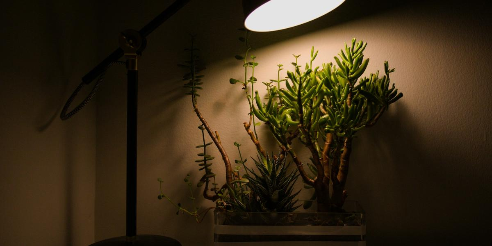

Choosing Grow Lights on a Budget
This post may contain affiliate links. As an Amazon Associate I earn from qualifying purchases.
Light is the fuel for everything your plants do. Water and nutrients are easy to provide. Light is often the thing that limits beginners, especially in apartments, RVs, and homes without a bright south-facing window. The good news is that growing leafy greens does not require expensive lights. Here is how to choose one without overspending.
Do you even need a grow light?
Maybe not. If you have a bright, sunny window and you are growing lettuce or herbs, natural light may be enough, especially in fall and spring. Watch your plants. If they are compact and green, you are fine. If they are stretching tall and thin, leaning hard toward the window, or looking pale, they need more light.
Why LEDs are the budget choice
LED lights use less electricity than older lighting types and give off less heat. Less heat matters a lot in Texas, where you are already working to keep reservoirs cool. They also last a long time, which keeps replacement costs down.
Leafy greens vs. fruiting crops
Lettuce, basil, and other greens need less light than tomatoes or peppers. That is a big reason to start with greens. Many marketing claims for grow lights are aimed at growers of large, flowering plants. You do not need that power for a few jars of lettuce.
Types of budget lights
- LED shop lights: inexpensive, widely available, and they cover a long, narrow area. A good fit for a shelf of jars or a tote.
- LED grow strips or bars: slim, easy to mount under a cabinet or shelf. Great for RVs and tiny homes.
- Clip-on LED grow lights: handy for a single jar or a small herb setup.
- Small LED panels: a step up for a larger setup; check reviews and actual power draw.
You can find the lights I point beginners toward on my Gear page.
What the labels mean
- Watts: how much electricity the light uses. Not a direct measure of how much useful light it puts out. Look for "actual wattage," because some products advertise a bigger "equivalent" number.
- Color temperature (Kelvin): "daylight" lights in the higher range look bluish-white. Many growers use daylight or full-spectrum LEDs for greens.
- Full spectrum: marketing term meaning the light covers a broad range of colors. Many simple white LEDs work well for greens.
- Lumens: a measure of brightness to human eyes, not exactly what plants use, but useful for comparing similar lights.
Distance matters
Light gets weaker quickly as you move away from it. A light hung far above plants loses a lot of its effectiveness. LEDs run cool enough that they can often sit fairly close to plants. Follow the manufacturer's recommended hanging height, and raise the light if leaves look bleached or crispy near the top.
Use a timer
Plants need a period of darkness, and consistency helps them. A simple mechanical or digital timer takes the guesswork out of it. For leafy greens, many growers run lights for a long day, but follow your light's guidance and watch your plants. A timer is one of the cheapest, most useful upgrades you can buy.
Mounting on a budget
- Hang a shop light from a wire shelf with S-hooks or chain so you can raise it as plants grow.
- Use adhesive clips or zip ties for strip lights under a cabinet.
- Use a clip-on light on a shelf edge for a single jar.
Keep cords and plugs away from water, use a drip loop (let the cord dip below the outlet so water cannot run down into it), and plug into a GFCI outlet where possible. Water and electricity need respect.
Light reflectors
A white wall or a piece of white foam board behind your setup bounces light back onto the plants. It is cheap and effective. Avoid letting light hit your reservoirs, though. That invites algae. See fixing root rot and algae.
Lights and Texas heat
Even LEDs give off some heat. In summer, keep lights from warming your reservoirs, and check water temperature. Read keeping reservoirs cool in a Texas summer for more.
Start small and upgrade later
Your first light does not need to be your forever light. Start with something simple for a few plants. If you expand, you will know exactly what you need. For a full first setup, see building a starter setup under $50.
More help
For a quick-start plan, grab the free mini-guide on the home page. The full book, The Soil-Free Farming Revolution, covers lighting in more detail for each type of setup.